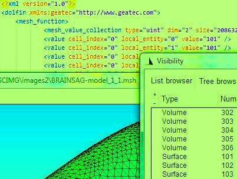

GmshToDolfin
What gmshToDolfin.py does
The converter, gmshToDolfin.py, takes as input a GMSH 3D mesh with numbered volumes and surfaces.
From this mesh, it generates a 3D Dolfin mesh with 2 mesh functions:
The converter is tested with FEniCS 1.0 for Windows and GMSH 2.6.2 for Windows.
Its usage becomes clear from inspecting the last few lines of the source code under the comment Main.

The distinct surfaces can be used to conveniently specify distinct boundary conditions in a FEniCS variational form.